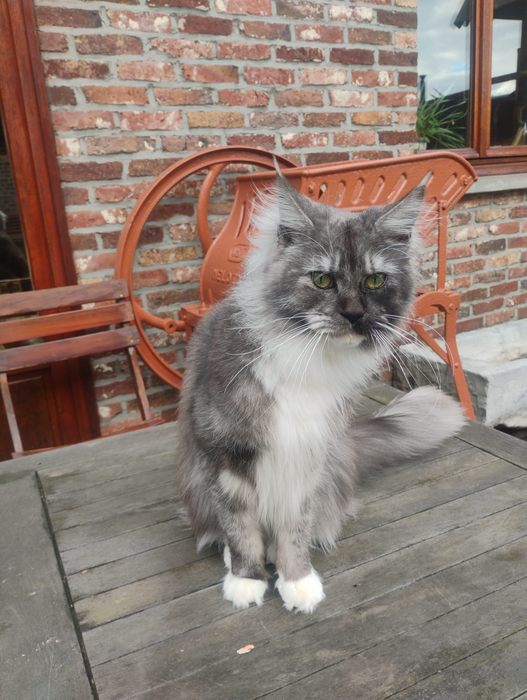

Passievolle Maine Coon Cattery
Welkom bij Fort Maine Coon, een kleinschalige Maine Coon cattery gevestigd op onze authentieke vierkantshoeve.
Wij zijn een gezin waar onze passie voor dieren en zorg centraal staat — als dierenarts en leerkracht combineren wij professionele kennis met een warme, huiselijke omgeving.
Onze katten groeien op als volwaardige gezinsleden. Omdat wij thuisonderwijs geven aan onze kinderen, is er vrijwel altijd iemand thuis, waardoor onze katten en kittens voortdurend omringd zijn door aandacht, rust en dagelijkse interactie.
Bij Fort Maine Coon geloven wij in een verantwoorde en doordachte manier van fokken, waarbij gezondheid, welzijn en rastype centraal staan.
Onze katten groeien op op onze authentieke vierkantshoeve, waar zij deel uitmaken van het dagelijkse gezinsleven. Ze hebben toegang tot de beschutte binnenkoer, waardoor ze op een veilige manier buitenprikkels kunnen ervaren. Deze omgeving, gecombineerd met een rustige en traditionele levensstijl, draagt bij aan hun evenwichtige en nieuwsgierige karakter.
Omdat onze katten opgroeien tussen de activiteiten van het gezin en in het bijzijn van jonge kinderen, leren zij van jongs af aan omgaan met verschillende situaties en mensen. Dit helpt hen uit te groeien tot sociale, stabiele en aanhankelijke Maine Coons.
Wij kiezen bewust voor een kleinschalige cattery, zodat elke kat en elk nest de tijd, aandacht en zorg krijgt die het verdient. Combinaties worden zorgvuldig gekozen met aandacht voor gezondheid, genetica, karakter en het behoud van het authentieke Maine Coon-type.
Voor ons zijn onze katten in de eerste plaats geliefde huisdieren, en hun welzijn staat altijd voorop.

Wij hopen in de nabije toekomst een nestje Maine Coon kittens te mogen verwelkomen. Zodra er meer informatie beschikbaar is, wordt deze hier gedeeld.
Onze kittens verhuizen
Bij Fort Maine Coon worden al onze kittens verkocht met een officiële stamboom. Voor ons is dit een essentieel onderdeel van verantwoorde en transparante fokkerij.
Een stamboom is namelijk veel meer dan enkel een document dat de afstamming van een kitten weergeeft. Het biedt inzicht in de genetische achtergrond van de kat en helpt fokkers om doordachte combinaties te maken en inteelt te beperken. Door te werken met stambomen en de bijhorende gezondheidscontroles streven wij ernaar om Maine Coons te fokken die niet alleen voldoen aan de rasstandaard, maar vooral ook gezond en stabiel zijn. Een kitten zonder stamboom is daarom niet hetzelfde als een kitten mét stamboom. De stamboom staat voor controleerbare afkomst, gezondheidsonderzoek en verantwoord fokbeleid.
Heeft u interesse in een kitten van Fort Maine Coon? Contacteer ons persoonlijk of vul onderstaand formulier in en we nemen zo snel mogelijk contact met u op.
Email: contact.fortgroen@gmail.com
Telefoon: +32484850516
Volg ons ook op sociale media.
Facebook | Instagram